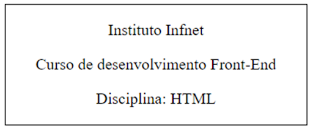

Exercício 1 - Criação uma página Web simples
Crie uma página que exiba na tela o texto "Olá Mundo!". Para tal, vá ao arquivo index.html e modifique o arquivo onde for necessário. Não acrescente nenhuma tag nova!
TP 1.1
Exercício 2 - Parágrafos e quebras de linha
Neste exercício iremos escrever uma carta para ser acessada pelos futuros habitantes de Marte. Para tal, criaremos uma página Web, usando as tags <p> e <br>, que são usadas para criar parágrafos e quebras de linha. Essa carta precisa ter 3 parágrafos:
- No primeiro, você irá se apresentar.
- No segundo, você irá escrever alguma coisa relevante sobre o planeta Terra.
- No terceiro, pergunte como estão as coisas em Marte.
- Quebre 2 linhas e escreva "Saudações terráqueas".
- Por fim, quebre mais 1 linha e escreva seu nome.
Observação: Não esqueça de usar <p> para os 3 parágrafos e <br> para as quebras de linha. Os dois últimos itens não precisam estar escritos em uma tag <p>.
TP 1.2
Exercício 3 - Criação de páginas com headers
Agora criaremos mais uma página. Nessa nova página, pedimos para você dissertar sobre 3 pontos:
- Explicar como funciona a Web e o que é uma página web.
- Explicar os papéis das linguagens HTML e CSS numa página web.
- Explicar o que são ambientes de programação.
Observação: Para cada um desses pontos, você irá criar uma tag <h2> com o título do item e a tag <p> com a explicação.
TP 1.3
Exercício 4 - Criação de tags semânticas
Você pode utilizar a tag <header> de diversas maneiras. No uso mais comum, apresenta informações introdutórias do início da página, como cabeçalhos, imagens de logo ou contêineres. Nesse exercício crie um header, que contenha os itens a seguir:
- Cabeçalho escrito “Instituto Infnet”.
- O texto dentro dentro de uma tag <p>, deve vir assim:
“O Instituto Infnet é a maior faculdade de tecnologia do Rio de Janeiro, com mais de 30 anos de história e mais de 20 mil alunos formados."
Observação:
- Coloque o title da página igual à “Instituto Infnet”.
- Utilize a tag <h1> para o cabeçalho.
- Os textos devem vir dentro da tag <p>.
- Não esqueça de usar a tag <header>.
TP 1.4
Exercício 5 - Avançando em tags semânticas
Você pode utilizar a tag <article> para definir o corpo de artigos de blogs, fóruns e portais de notícias. Neste exercício, crie um artigo e dentro dele:
Crie um header que contenha:
- Cabeçalho escrito Instituto Infnet.
- O texto dentro dentro da tag <p>, deve vir assim: "O Instituto Infnet é a maior faculdade de tecnologia do Rio de Janeiro, com mais de 30 anos de história e mais de 20 mil alunos formados"
- Um parágrafo que contenha o seguinte texto: “O Instituto Infnet é uma instituição privada de ensino superior sediada no Rio de Janeiro. Oferece cursos de graduação, pós-graduação e livres, presenciais e a distância. Seus cursos são voltados para as áreas de engenharia, computação, programação, ciência de dados, design, games, marketing digital, cinema, animação, publicidade e propaganda.”
Crie uma quebra de texto e em um novo parágrafo, escreva: “Fonte: Wikipedia”
Observação:
- Coloque o title da página igual à “Instituto Infnet”.
- Utilize a tag <h1> para o cabeçalho.
- Utilize <br> para quebra de linha.
- Os textos devem vir dentro da tag <p>.
- Não esqueça de usar as tags <header> e <article>.
TP 1.5
Exercício 6 - Criação de artigo
Crie um artigo e dentro dele faça as seguintesações:
Crie um header que contenha:
- Cabeçalho escrito Instituto Infnet.
- O texto dentro dentro da tag <p>, deve vir assim: "O Instituto Infnet é a maior faculdade de tecnologia do Rio de Janeiro, com mais de 30 anos de história e mais de 20 mil alunos formados"
Crie um menu usando a tag <nav>, com o seguinte item: “Fale Conosco.”
Um parágrafo que contenha o seguinte texto: “O Instituto Infnet é uma instituição privada de ensino superior sediada no Rio de Janeiro. Oferece cursos de graduação, pós-graduação e livres, presenciais e a distância. Seus cursos são voltados para as áreas de engenharia, computação, programação, ciência de dados, design, games, marketing digital, cinema, animação, publicidade e propaganda.”
Crie uma quebra de texto e em um novo parágrafo, escreva: “Fonte: Wikipedia”.
Crie um rodapé usando a tag <footer> e em um novo parágrafo, escreva: “R. São José, 90 - Centro, Rio de Janeiro - RJ, 20010-020”.
Observação:
- Coloque o title da página igual a do Instituto Infnet.
- Utilize a tag <h1> para o cabeçalho.
- Utilize <br> para quebra de linha.
- Os textos devem vir dentro da tag <p>.
- Não esqueça de usar as tags <header>, <article>, <nav> e <footer>.
TP 1.6
Exercício 7 - Incorporando CSS no header
Utilizando-se da criação de arquivos, crie um novo arquivo do tipo .css chamado "estilo.css" e faça sua chamada no head da página HTML "index.html".
Observação:
- Não se esqueça de criar um novo arquivo .css.
- Não se esqueça de chamar o novo arquivo no head.
TP 1.7
Exercício 8 - Alteração de texto do documento
Utilizando-se somente os arquivos disponíveis, sem criar outros arquivos, atribua à tag body:
- A cor azul.
- Tamanho de fonte de 14px.
TP 1.8
Exercício 9 - Cor do texto
Faça as tarefas abaixo:
- Crie no HTML uma tag h1 contendo seu nome, uma tag p contendo o nome do seu curso e uma tag "span" com o nome da sua cidade.
- Utilize no CSS a seleção de id para trocar a cor do nome para verde.
- Utilize no CSS a seleção de classe para trocar a cor do curso para azul.
- Utilize no CSS a seleção da tag para trocar a cor do nome da cidade para amarelo.
Observação: Utilize as seleções no arquivo CSS e adicione os atributos de id e cor nos respectivos campos para efetuar a seleção.
TP 1.9
Exercício 10 - Criação de um mini cartão
No arquivo index.html, crie um elemento "div" de identificador “card” e siga as etapas a seguir:
- Referencie-o no arquivo style.css
- Adicione à essa div:
- Borda vermelha.
- Tracejada.
- 2px de tamanho.
- Faça também que esta div possua dentro dela:
- Parágrafo com o texto “Olá mundo”.
- Texto esteja centralizado.
Observação: Utilize id para o identificador.
TP 1.10
Exercício 11 - Modificações CSS
No arquivo index.html, crie um elemento div de identificador “modal” e adicione as seguintes modificações CSS deste item no arquivo CSS:
- Borda sólida de 1px na cor azul.
- Cor de fundo cinza.
- Altura de 200px.
- Largura de 300px.
- Borda arredondada de 6px em todos os lados.
TP 1.11
Exercício 12 - Grupo - Jogo dos 7 erros 1
Verifique no código HTML, todos os erros que você consegue encontrar e os corrija!
Link: https://codesandbox.io/p/sandbox/63g5zs
TP 1.12
Exercício 13 - Grupo - Jogo dos 7 erros 2
Verifique no código HTML, todos os erros que você consegue encontrar e os corrija!
Link: https://codesandbox.io/p/sandbox/dr1-tp1-13-jogo-dos-7-erros-12-594h6f
TP 1.13
Exercício 14 - Grupo - Tags semânticas
Realize as tarefas abaixo:
Crie um rodapé com as seguintes informações:
- Uma seção com título "Correspondência", contendo:
- O horário para recebimento de correspondências.
- Um endereço para correspondência com:
- Nome da empresa.
- Rua, número e andar.
- Bairro.
- Cidade - estado.
- Uma seção com título "Telefones", contendo:
- O horário para recebimento de ligações.
- Telefone de Pessoa Física.
- Telefone de Pessoa Jurídica.
TP 1.14
Exercício 15 - Grupo - Recriação de HTML
Para esse exercício, recrie o HTML do exemplo que está na imagem abaixo. Para isto, faça as ações abaixo:
No arquivo index.html, crie uma tag div que possua 300px de largura. Para a estilização do texto, siga as etapas abaixo:
- Borda preta de 1px de largura e sólida.
- Tipo de fonte: Verdana.
- Tamanho de fonte: 12px.
- Alinhamento: centralizado horizontalmente.
- Espaçamento entre letras: 1.3px.
- Cor de texto: Roxo.
Observação:
- O conteúdo deve seguir o mesmo do exemplo abaixo.

- O conteúdo em texto do elemento "div", deve estar dentro de tags <p>.
- A estilização deve estar apenas no arquivo style.css.
TP 1.15
Exercício 16 - Grupo - Criação de cartão
No arquivo index.html, crie um elemento div de identificador “card” e siga as etapas a seguir:
- Referencie-o no arquivo style.css.
- Adicione à essa div:
- Borda azul.
- Sólida.
- 3px de tamanho.
- Borda arredondada em 8px.
- Altura de 100px.
- Largura de 100px.
- Faça também que esta div possua dentro dela um Parágrafo com as configurações abaixo:
- Texto “Olá mundo”.
- Texto alinhado à direita.
- Texto em negrito e itálico.
- Texto com a fonte Arial.
- Texto com a fonte de tamanho 20px.
TP 1.16